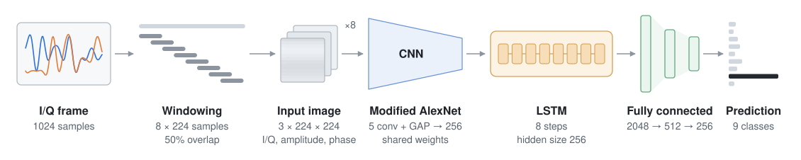
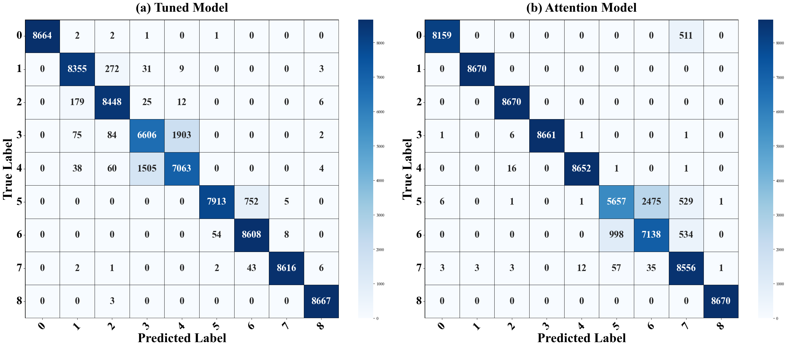
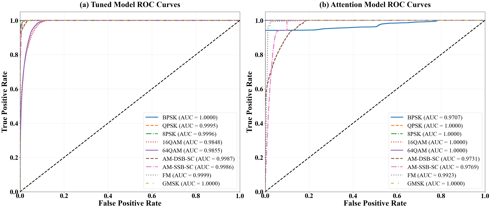
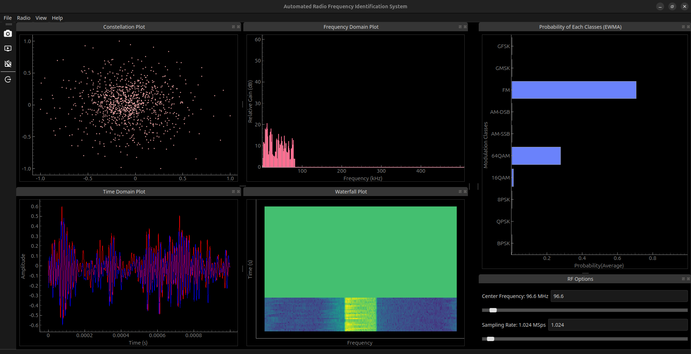

CNN-LSTM Hybrid Architecture for Over-the-Air Automatic Modulation Classification using SDR
Thapathali Campus, Institute of Engineering, Tribhuvan University, Kathmandu, Nepal
Journal of Innovations in Engineering Education, 2025

Abstract
Automatic Modulation Classification (AMC) is a core technology for future wireless communication systems, enabling the identification of modulation schemes without prior knowledge. This capability is essential for applications in cognitive radio, spectrum monitoring, and intelligent communication networks. We propose an AMC system based on a hybrid Convolutional Neural Network (CNN) and Long Short-Term Memory (LSTM) architecture, integrated with a Software Defined Radio (SDR) platform. The proposed architecture leverages CNNs for spatial feature extraction and LSTMs for capturing temporal dependencies, enabling efficient handling of complex, time-varying communication signals. The system’s practical ability was demonstrated by identifying over-the-air (OTA) signals from a custom-built FM transmitter alongside other modulation schemes. The system was trained on a hybrid dataset combining the RadioML2018 dataset with a custom-generated dataset, featuring samples at Signal-to-Noise Ratios (SNRs) from 0 to 30 dB. System performance was evaluated using accuracy, precision, recall, F1 score, and the Area Under the Receiver Operating Characteristic Curve (AUC-ROC). The optimized model achieved 93.48% accuracy, 93.53% precision, 93.48% recall, and an F1 score of 93.45%. The AUC-ROC analysis confirmed the model’s discriminative power, even in noisy conditions. This paper’s experimental results validate the effectiveness of the hybrid CNN-LSTM architecture for AMC, suggesting its potential application in adaptive spectrum management and advanced cognitive radio systems.
Method
Input. Each frame of 1024 complex baseband samples is split into eight windows of 224 samples with 50% overlap. For every window we compute the amplitude A[n] = √(I[n]² + Q[n]²) and the phase φ[n] = atan2(Q[n], I[n]). The I/Q, amplitude and phase sequences are tiled into 224 × 224 matrices and stacked into a three-channel image in which each channel encodes one property of the signal.
Network. A modified AlexNet, with five convolutional layers and global average pooling in place of the original fully connected layers, maps each window to a 256-dimensional vector; the same weights are used for all eight windows. An LSTM with hidden size 256 reads the eight vectors in order. Its hidden states at all eight steps are concatenated into a 2048-dimensional vector, which two fully connected layers with 512 and 256 units and a softmax output map to class probabilities.
Training. The network is trained end to end with cross-entropy loss and Adam for 10 epochs, with a learning rate of 1.5 × 10−4, batch size 32 and dropout 0.6. Dropout, learning rate and the width of the first fully connected layer were chosen by a hyperparameter search. The checkpoint with the lowest validation loss is used for testing.
Data
The dataset combines RadioML 2018.01A with signals we generated in GNU Radio. From RadioML we keep nine classes at SNRs of 0 dB and above. The generated part adds frames corrupted with additive white Gaussian noise at the same SNR levels, and a set of noise-free frames.
| Classes | BPSK, QPSK, 8PSK, 16QAM, 64QAM, AM-DSB-SC, AM-SSB-SC, FM, GMSK |
|---|---|
| SNR | 0 to 30 dB in 2 dB steps, plus noise-free signals |
| Frames | 779,688 frames of 1024 I/Q samples: 589,824 from RadioML and 189,864 generated |
| Balance | 5,096 frames for each class at each SNR level |
| Split | 80 / 10 / 10 for training, validation and test, stratified by class and SNR |
Results
| Configuration | Accuracy | Precision | Recall | F1 |
|---|---|---|---|---|
| Batch size 16 | 91.46 | 91.46 | 91.46 | 91.33 |
| Batch size 32 | 91.34 | 91.47 | 91.34 | 91.30 |
| Batch size 32, tuned | 93.48 | 93.53 | 93.48 | 93.45 |
| Single-head attention | 93.34 | 93.56 | 93.34 | 93.22 |
Tuning adds about two points over the untuned models. Most of the remaining errors are between 16QAM and 64QAM, whose constellations overlap at low SNR. The attention variant replaces the concatenation of LSTM states with single-head temporal attention, which averages them into one 256-dimensional vector. Its accuracy is similar, but it confuses AM-DSB-SC with AM-SSB-SC far more often.


Over-the-air test
We also ran the model on signals received with an RTL-SDR, both from a custom-built FM transmitter and from commercial broadcasts. Accuracy was about 86% on recorded I/Q data and about 80% when classifying live. We attribute the drop from the benchmark accuracy to multipath fading, Doppler shifts and carrier frequency offset in real channels. The desktop application used for these tests is available in a separate repository.

Citation
@article{padhya2025cnnlstm,
title = {{CNN-LSTM} hybrid Architecture for over-the-air Automatic
Modulation Classification using {SDR}},
author = {Padhya, Dinanath and Acharya, Krishna and Dahal, Bipul Kumar
and Baniya Kshatri, Dinesh},
journal = {Journal of Innovations in Engineering Education},
volume = {8},
number = {1},
pages = {32--39},
year = {2025},
doi = {10.3126/jiee.v8i1.82136}
}